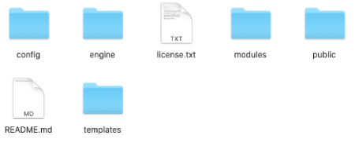

The Trongate Framework - like any PHP framework - is essentially a collection of folders and files that have been created to make your life easier. There now follows a summary of what each of the folders is for.

The 'engine' folder contains the main workings of the Trongate framework. This includes all of the files for loading classes and handling routes, as well as all of the helpers that come with the Trongate Framework.
Please avoid changing any files within the engine folder - unless you really know what you're doing.
The 'config' folder is where you store settings to do with your application. The most important file within this folder is the config.php file. This is where you would declare things like your website base URL, your environment, your default controllers and more. The values that you set in your config folder are available throughout your entire application.
The 'modules' folder is where you would store your modules. Modules are self-contained folders that contain assets that have been designed to carry out certain tasks. For example, if you were building an invoicing system, you may decide to create a module called 'invoices'. All of the code that relates to the generation and management of invoices could potentially be contained within your 'invoices' module.
Modules (in Trongate) typically contain:
With Trongate, modules can be easily copied from one app to another. They can even contain other modules - but let's not get ahead of ourselves!
The 'templates' folder is where you store your HTML templates. Please note that the Trongate Framework does not have a templating engine. That's because PHP is a templating engine. So, that's one more thing that you don't have to learn and it's also another factor that makes Trongate faster than other PHP frameworks.
The 'public' folder contains the main entry point for your Trongate web application - namely, a PHP file named 'index.php'. Normally, developers like to use the public folder to store things like CSS files, JavaScript files, images and things of that nature.